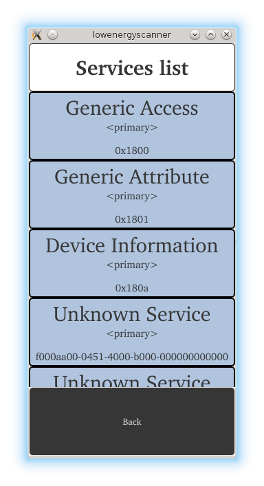
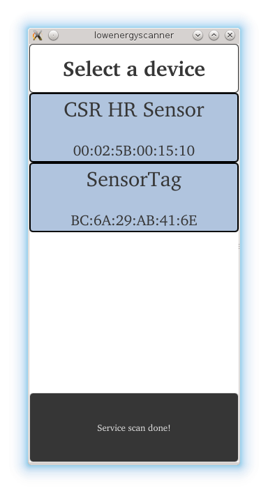
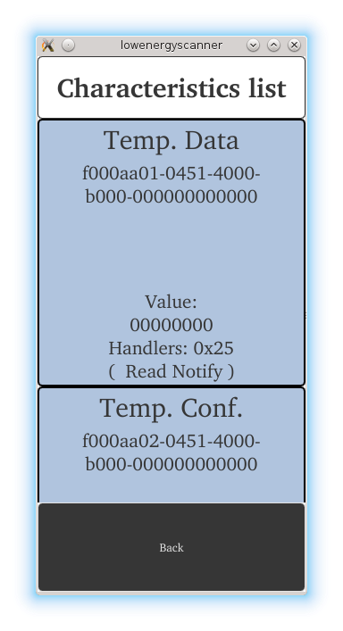

Bluetooth Low Energy Scanner
An application designed to browse the content of Bluetooth Low Energy peripheral devices. The example demonstrates the use of all Qt Bluetooth Low Energy classes.
The Bluetooth Low Energy Scanner Example shows how to develop Bluetooth Low Energy applications using the Qt Bluetooth API. The application covers scanning for Low Energy devices, scanning their services and reading the service characteristics and descriptors.

The example introduces the following Qt classes:
The example can be used with any arbitrary Bluetooth Low Energy peripheral device. It creates a snapshot of all services, characteristics and descriptors and presents them to the user. Therefore the application provides an easy way of browsing the content offered by a peripheral device.
Running the Example
To run the example from Qt Creator, open the Welcome mode and select the example from Examples. For more information, visit Building and Running an Example.
Requesting Permission to use Bluetooth
On certain platforms, it is required to explicitly grant permissions for using Bluetooth. The example uses BluetoothPermission QML object to check and request the permissions, if required:
BluetoothPermission { id: permission communicationModes: BluetoothPermission.Access onStatusChanged: { if (permission.status === Qt.PermissionStatus.Denied) Device.update = "Bluetooth permission required" else if (permission.status === Qt.PermissionStatus.Granted) devicesPage.toggleDiscovery() } }
The permission request dialog is triggered when the user tries to start the device discovery, and the permission status is Undetermined:
onButtonClick: { if (permission.status === Qt.PermissionStatus.Undetermined) permission.request() else if (permission.status === Qt.PermissionStatus.Granted) devicesPage.toggleDiscovery() }
The device discovery starts if the permission is granted by the user. Otherwise the application is non-functional.
Scanning for Devices
The first step is to find all peripheral devices. The devices can be found using the QBluetoothDeviceDiscoveryAgent class. The discovery process is started using start(). Each new device is advertised via the deviceDiscovered() signal:
discoveryAgent = new QBluetoothDeviceDiscoveryAgent(this); discoveryAgent->setLowEnergyDiscoveryTimeout(25000); connect(discoveryAgent, &QBluetoothDeviceDiscoveryAgent::deviceDiscovered, this, &Device::addDevice); connect(discoveryAgent, &QBluetoothDeviceDiscoveryAgent::errorOccurred, this, &Device::deviceScanError); connect(discoveryAgent, &QBluetoothDeviceDiscoveryAgent::finished, this, &Device::deviceScanFinished); connect(discoveryAgent, &QBluetoothDeviceDiscoveryAgent::canceled, this, &Device::deviceScanFinished); discoveryAgent->start(QBluetoothDeviceDiscoveryAgent::LowEnergyMethod);
The below addDevice() slot is triggered as a reaction to the discovery of a new device. It filters all found devices which have the QBluetoothDeviceInfo::LowEnergyCoreConfiguration flag and adds them to a list which is shown to the user. The deviceDiscovered() signal may be emitted multiple times for the same device as more details are discovered. Here we match these device discoveries so that the user only sees the individual devices:
void Device::addDevice(const QBluetoothDeviceInfo &info) { if (info.coreConfigurations() & QBluetoothDeviceInfo::LowEnergyCoreConfiguration) { auto devInfo = new DeviceInfo(info); auto it = std::find_if(devices.begin(), devices.end(), [devInfo](DeviceInfo *dev) { return devInfo->getAddress() == dev->getAddress(); }); if (it == devices.end()) { devices.append(devInfo); } else { auto oldDev = *it; *it = devInfo; delete oldDev; } emit devicesUpdated(); } }
The list of devices may look like in the image below.
Note: It is a prerequisite that the remote devices actively advertise their presence.

Connecting to Services
After the user has selected a device from the list the application connects to the device and scans all services. The QLowEnergyController class is used to connect to the device. The QLowEnergyController::connectToDevice() function triggers the connection process which lasts until the QLowEnergyController::connected() signal is received or an error has occurred:
if (!controller) { // Connecting signals and slots for connecting to LE services. controller = QLowEnergyController::createCentral(currentDevice.getDevice(), this); connect(controller, &QLowEnergyController::connected, this, &Device::deviceConnected); connect(controller, &QLowEnergyController::errorOccurred, this, &Device::errorReceived); connect(controller, &QLowEnergyController::disconnected, this, &Device::deviceDisconnected); connect(controller, &QLowEnergyController::serviceDiscovered, this, &Device::addLowEnergyService); connect(controller, &QLowEnergyController::discoveryFinished, this, &Device::serviceScanDone); } if (isRandomAddress()) controller->setRemoteAddressType(QLowEnergyController::RandomAddress); else controller->setRemoteAddressType(QLowEnergyController::PublicAddress); controller->connectToDevice();
The slot triggered by the connected() signal immediately calls QLowEnergyController::discoverServices() to start the service discovery on the connected peripheral device.
controller->discoverServices();
The resulting list is presented to the user.The image below displays the results when the SensorTag device is selected. The view lists the names of the services, whether they are primary or secondary services and the UUID which determines the service type.
As soon as the service is chosen the related QLowEnergyService instance is created to permit interaction with it:
QLowEnergyService *service = controller->createServiceObject(serviceUuid); if (!service) { qWarning() << "Cannot create service for uuid"; return; }
The service object provides the required signals and functions to discover the service details, read and write characteristics and descriptors, as well as receive data change notifications. Change notifications can be triggered as a result of writing a value or due to an on-device update potentially triggered by the internal logic. During the initial detail search the service's state() transitions from RemoteService to RemoteServiceDiscovering and eventually ends with RemoteServiceDiscovered:
connect(service, &QLowEnergyService::stateChanged, this, &Device::serviceDetailsDiscovered); service->discoverDetails(); setUpdate(u"Back\n(Discovering details...)"_s);
Reading Service Data
Upon selection of a service the service details are shown. Each characteristic is listed together with its name, UUID, value, handle and properties.

It is possible to retrieve the service's characteristics via QLowEnergyService::characteristics() and in turn, each descriptor can be obtained via QLowEnergyCharacteristic::descriptors().
const QList<QLowEnergyCharacteristic> chars = service->characteristics(); for (const QLowEnergyCharacteristic &ch : chars) { auto cInfo = new CharacteristicInfo(ch); m_characteristics.append(cInfo); }
Although the example application does not display descriptors it uses descriptors to get the name of an individual characteristic if its name cannot be discerned based on its UUID. The second way to obtain the name is the existence of a descriptor of the type QBluetoothUuid::DescriptorType::CharacteristicUserDescription. The code below demonstrates how this may be achieved:
QString name = m_characteristic.name(); if (!name.isEmpty()) return name; // find descriptor with CharacteristicUserDescription const QList<QLowEnergyDescriptor> descriptors = m_characteristic.descriptors(); for (const QLowEnergyDescriptor &descriptor : descriptors) { if (descriptor.type() == QBluetoothUuid::DescriptorType::CharacteristicUserDescription) { name = descriptor.value(); break; } }